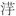

洲渔笛谱》（又名《草窗词》）。
洲渔笛谱》（又名《草窗词》）。作者小传
徽宗皇帝（1082—1135） 名赵佶，神宗第十一子，北宋第八个皇帝。在位二十五年（1101—1125）。宣和七年金兵南下，年底，禅位与皇太子赵桓（钦宗），自称教主道君太上皇帝。靖康二年（1127）被金人虏俘北去。绍兴五年（1135）卒于五国城（今黑龙江依兰）。平生于诗文书画之外，亦工长短句。有晚清朱孝臧《彊村丛书》辑《徽宗词》一卷。
钱惟演（977—1034） 字希圣，临安（今浙江杭州）人，吴越忠懿王钱俶子。少补牙门将，归宋，为右屯卫将军。咸平三年（1000）召试，改文职，为太仆少卿。累迁翰林学士枢密使，罢为镇国军节度观察留后，改保大军节度使，知河阳。入朝，加同中书门下平章事。仁宗明道二年（1033），坐擅议宗庙，且与后家通婚，落职，以崇信军节度使归镇。卒谥思，改谥文僖。以诗名，常与杨亿、刘筠等十七人相唱和，辑为《西昆酬唱集》，后人称之为“西昆体”。
范仲淹（989—1052） 字希文，其先邠人，后徙苏州吴县（今属江苏）。真宗大中祥符八年（1015）进士。仕至密枢副使参知政事，主张政治革新，为守旧派所阻。以资政殿学士为陕西四路宣抚使，知邠州。守边数年，号令明白，爱抚士卒，西夏不敢来犯，称他“胸中自有数万甲兵”。转徙邓州、荆南、杭州、青州。卒，赠兵部尚书楚国公，谥文正。有《范文正公文集》。词传世甚少，擅写边塞风光，风格苍劲明健。有近代《彊村丛书》辑刻《范文正公诗余》一卷，仅得六首，且《忆王孙》一首为误收李重元作。
张 先（990—1078） 字子野，乌程（今浙江湖州市）人。仁宗天圣八年（1030）进士。尝知吴江县。晏殊任京兆尹，辟为通判。英宗治平元年（1064）以都官郎中致仕，退居乡间，以诗酒自娱。年八十九卒。词清丽工巧，小令、慢词兼擅，而慢词亦多用小令作法，评家常将其与柳永并论。有《安陆集》一卷。有后人辑《张子野词》二卷、补遗一卷，存词一百八十余首。
晏 殊（991—1055） 字同叔，抚州临川（今属江西）人。七岁能文，真宗景德二年（1005）以神童荐，赐进士出身，擢秘书监正字。庆历中，拜集贤殿学士同平章事兼枢密院使。为相务进贤才，当世名臣如范仲淹、韩琦、富弼等皆蒙擢用。后出知永兴军，徙河南，以疾归京师。卒赠司空兼侍中，谥元献。词风蕴藉和婉，温润秀洁，为宋初第一大家。文集已佚，仅有清人所辑《晏元献遗文》及《珠玉词》存世。
韩 缜（1019—1097） 字玉汝，开封雍丘（今河南杞县）人。仁宗庆历二年（1042）进士，英宗朝历淮南转运使，神宗朝累知枢密院事，哲宗朝拜尚书右仆射兼中书侍郎，出知颍昌府，以太子太保致仕。卒，赠司空、崇国公，谥庄敏。
宋 祁（998—1061） 字子京，安州安陆（今属湖北）人，徙开封雍丘（今河南杞县）。仁宗天圣二年（1024）与兄庠同举进士，时号“二宋”，以大小别之。历官翰林学士、史馆修撰。与欧阳修等合撰《新唐书》，书成，进工部尚书，旋拜翰林学士承旨。卒谥景文。文集已散佚，词有近人赵万里辑《宋景文公长短句》一卷，得词六首。
欧阳修（1007—1072） 字永叔，号醉翁，晚号六一居士，庐陵（今江西吉安）人。仁宗天圣八年（1030）省元，中进士甲科，累擢知制诰、翰林学士，历枢密副使、参知政事，神宗朝迁兵部尚书，以太子少师致仕。卒赠太子太师，谥文忠。他是北宋诗文革新运动的领袖，以散文成就最高，为“唐宋八大家”之一，有《欧阳文忠公集》。词承袭南唐余韵，婉丽深致。有《六一词》、《欧阳文忠公近体乐府》及《醉翁琴趣外篇》三种词集传世。
柳 永（生卒年不详） 字耆卿，崇安（今属福建）人。仁宗景祐元年（1034）进士。一生潦倒落拓，只做过余杭令、盐场大使一类的小官，终官屯田员外郎，世称柳屯田；排行第七，称柳七。初名三变，字景庄。传说因其《鹤冲天》词有“忍把浮名、换了浅斟低唱”句，为仁宗所不喜，放榜时特黜落之，曰：“何要浮名？且填词去。”于是益放纵酒楼倡馆间，无复检率，自称“奉旨填词柳三变”。后改名永，始得磨勘转官。在词史上是第一个大量创作慢词的词人，内容多描写都市风情和歌妓生活，尤以抒写羁旅行役之情见长，铺叙展衍，情景交融，音律谐婉，语言通俗，流传很广，当时有“凡有井水处，即能歌柳词”之说。有《乐章集》。
王安石（1021—1086） 字介甫，晚号半山老人，临川（今江西抚州市）人。仁宗庆历二年（1042）进士。神宗熙宁二年（1042）拜参知政事，次年拜相。厉行新法，裁抑豪强，为守旧派所抵制。晚年退居江宁（今江苏南京），封荆国公。卒谥文，崇宁间追谥舒王。是中国古代最著名的改革家，诗文创作成就很高，有《临川集》传世。词作不多而风格高峻，有近代《彊村丛书》辑《临川先生歌曲》一卷，补遗一卷，凡二十余首。
王安国（1082—1074） 字平甫，临川（今属江西）人，王安石弟。熙宁初赐进士及第，除西京国子教授、崇文院校书，官至大理寺丞、集贤校理。对王安石变法新政并不完全赞同，但在安石罢相后，还是被旧党吕惠卿挟私怨诬陷夺官，放归田里。有《王校理集》，今不传。
晏幾道（生卒年不详） 字叔原，号小山，抚州临川（今属江西）人。天资聪颖过人，然真率无忌，不与世苟合，常被目为“才有余而德不足”（韩维语），因此妨碍了仕途。一生只做过监颍昌许田镇、开封府推官一类的闲杂佐职。词工于言情，感伤情绪较浓，是北宋“婉约”风格的代表。因是晏殊幼子，故后人将他们并称“二晏”，但其词学造诣和在词史的地位都超过乃父。有《小山词》。
苏 轼（1037—1101） 字子瞻，一字和仲，自号东坡居士，眉州眉山（今属四川）人。仁宗嘉祐二年（1057）进士，历通判杭州，知密州、徐州、湖州。因“乌台诗案”贬黄州团练副使。哲宗即位，除翰林学士，知登州、杭州，一度召为端明殿学士、礼部尚书，复出知颍州。绍圣初，坐讪谤先朝，贬谪惠州、儋州。徽宗立，赦还，提举玉局观，卒于常州。是中国古代少有的文学天才，诗、文、书、画都取得极高成就。词以豪放雄奇风格见长，开拓了词的境界，成为北宋词中豪放派的代表。有《东坡词》、《东坡乐府》。
秦 观（1049—1100） 字少游，一字太虚，号淮海居士，扬州高邮（今属江苏）人。神宗元丰八年（1085）进士，历定海主簿、蔡州教授，以苏轼荐，除太学博士、国史院编修官。绍圣初，坐党籍，削秩，贬监处州酒税，徙郴州，编管横州，再徙雷州。徽宗立，放还途中卒于藤州。与黄庭坚、晁补之、张耒有“苏门四学士”之称，词作却以婉约见长，俊逸清丽，自成一家。有《淮海词》、《淮海居士长短句》。
晁端礼（1046？—1113） 一作元礼，字次膺，其先澶州清丰人，徙家彭门（今江苏徐州）。熙宁六年（1073）进士，两为县令，都因忤犯上官而废职。徽宗政和三年（1113）应召赴京，以词作蒙徽宗赏识，除大晟府协律郎，未及就职而卒。有词集《闲斋琴趣》六卷。
赵令畤（1051—1034） 初字景贶，改字德麟，自号聊复翁、藏六居士，宋太祖赵匡胤次子燕王德昭玄孙。元祐六年（1091）签署颍州公事，与苏轼交好。因受牵连罚金，列入党籍。后官右朝请大夫，迁洪州观察使。南宋高宗绍兴初，袭封安定郡王。死后赠开府仪同三司。有笔记《侯鲭录》传世。词有近人赵万里辑《聊复集》一卷。
晁补之（1053—1110） 字无咎，晚年自号归来子，济州巨野（今属山东）人。十七岁时随父端友宰杭州新城县，文章受到苏轼揄扬，由此知名。神宗元丰二年（1079）进士，元祐中为校书郎，以秘阁校理通判扬州。绍圣末，入党籍，贬监信州酒税。废居八年。起，知泗州，卒于官。“苏门四学士”之一，词风受苏轼影响较大，清人冯煦评其“所为诗余，无子瞻之高华，而沉咽则过之”。有《琴趣外篇》六卷。
晁冲之（生卒年不详） 字叔用，一字用道，巨野（今属山东）人。补之从弟。举进士。绍圣中坐党籍，废居具茨山（今河南密县东）下，号具茨先生。徽宗时以《汉宫春·咏梅》词受知于蔡京父子，得官大晟府丞。精于音律，擅词，惜作品传世不多。有近人赵万里辑《晁叔用词》一卷。
舒 亶（1041—1103） 字信道，号懒堂，明州慈溪（今属浙江）人。英宗治平二年（1065）进士，试礼部第一。以陷害贤良起家，屡兴大狱，王安国、苏轼等皆受其害。神宗朝官至御史中丞，举劾唯私，气焰嚣张，见者侧目。坐罪废斥。徽宗朝复起，累除龙图阁待制。有近人赵万里辑《舒学士词》一卷。
朱 服（1048—？） 字行中，乌程（今浙江湖州）人。神宗熙宁六年（1073）进士。累官国子司业、起居舍人，以直龙图阁知润州，转徙泉、婺、宁、卢、寿五州。哲宗朝，历中书舍人、礼部侍郎。徽宗朝，加集贤殿修撰，知广州。坐前与苏轼游，黜知袁州，再贬蕲州安置，改兴国军，卒。
毛 滂（1064—？） 字泽民，号东堂，衢州江山（今属浙江）人。哲宗元祐年间为杭州法曹，绍圣间改衢州推官，元符二年（1099）知武康县。曾受权臣曾布赏识，擢置馆阁。布败，改投蔡京门下，连进谀词十首以求升调。徽宗政和中官至祠部员外郎，知秀州。词风清丽。有《东堂词》二卷。
陈 克（1081—1137？） 字子高，号赤城居士，临海人，一说天台（今均属浙江）人。绍兴中，为敕令所删定官。侨居金陵（今江苏南京），曾入守帅吕祉幕府，辟为右承事郎。淮西事变，为叛将郦琼所害。工词，格韵绝高，清人陈廷焯称其词“婉雅闲丽，暗合温（庭筠）、韦（庄）之旨”，认为其成就远在晁补之、毛滂、万俟咏等人之上。有《赤城词》一卷。
李元膺（生卒年不详） 东平（今属山东）人。曾任南京教官。哲宗绍圣间，李孝美作《墨谱法式》，元膺为序；又其《蓦山谿》词副题作“送蔡元长”（“元长”为蔡京字），由此知其为北宋后期人物。有近人赵万里辑《李元膺词》一卷，仅九首。
时 彦（？—1107） 字邦美，开封（今属河南）人。神宗元丰二年（1079）进士第一。历兵部员外郎、秘阁校理、河东转运使、开封府尹等职，官至吏部尚书。
李之仪（生卒年不详） 字端叔，号姑溪居士，沧州无棣（今属山东）人。神宗熙宁三年（1070）进士，历枢密院编修官，通判原州。元符中监内香药库，御史奏其尝从苏轼幕府，不可以任京官，诏停。徽宗朝，提举河东常平，坐为范纯仁遗表作行状，编管太平州。政和七年（1117），以朝议大夫致仕，年八十而卒。能文，尤工尺牍。其《跋吴师道小词》，对词自唐末五代至北宋初期的发展流变及名家词风均有评价。有《姑溪词》。
周邦彦（1056—1121） 字美成，号清真居士，钱塘（今浙江杭州）人。神宗元丰初游学汴京（今河南开封），六年（1083），上《汴京赋》，洋洋七千言，名噪京师，由太学生一跃升为太学正。后历任地方官。徽宗朝，仕至徽猷阁待制，提举大晟府。后又出知顺昌府，徙处州，秩满，以待制提举洞霄宫，晚居明州。邦彦妙通音律，能自度曲，尤擅长调，其词清正醇和，艺术造诣极高，历来被词家奉为“正宗”。有《片玉集》（又名《清真集》）。
贺 铸（1052—1125） 字方回，晚号庆湖遗老，卫州（今河南汲县）人。宋太祖孝惠贺皇后族孙。娶宗女，授右班殿直。后改文职。元祐中以通直郎通判泗州，改太平州副长官。徽宗大观三年（1109），以承议郎致仕，退居苏州，以藏书自娱。宣和七年卒于常州僧舍。博学能文，词作风格多样，肆口而成，不施藻彩。有《东山词》。
张元幹（1091—1160以后） 字仲宗，号芦川居士，又号真隐山人，长乐（今属福建）人。徽宗时为太学上舍生。靖康元年（1126）李纲为亲征行营使抗金，元幹为其属官，官至将作监丞。秦桧当政，致仕家居。绍兴中胡铨主张抗金，为秦桧贬谪，元幹以词送之，遂获罪，被除名为民。词多慷慨豪迈之作。有《芦川归来集》。
叶梦得（1077—1184） 字少蕴，号石林居士，原籍吴县（今江苏苏州），迁居乌程（今浙江吴兴）已四世。哲宗绍圣四年（1097）进士，徽宗朝，累官龙图阁直学士。高宗朝，任江东安抚制置大使，兼知建康府，行宫留守，积极致力于防务及军饷供应，主张抗金。晚年退居湖州弁山，卒赠检校少保。他在所著《石林诗话》中对苏轼颇有微词，但词作风格却接近苏轼，间有感怀时事之作。有《石林词》一卷。
汪 藻（1079—1154） 字彦章，饶州德兴（今属江西）人。徽宗崇宁五年（1106）进士，高宗朝，累官中书舍人、翰林学士，出知湖州、徽州、宣州。以曾为蔡京、王黼门客，夺职，贬居永州卒。词在当时，人多传诵，惜后世留传甚少。《彊村丛书》辑有《浮溪词》，仅三首。
刘一止（1079—1160） 字行简，湖州归安（今浙江吴兴）人。徽宗宣和三年（1121）进士。绍兴初，召试，除秘书省校书郎，历给事中，进敷文阁待制，致仕。有《苕溪乐章》一卷，以《喜迁莺·晓行》最有名，当时盛称于京师，人以“刘晓行”称之。
韩 疁（生卒年不详） 字子耕，号萧闲，有《萧闲词》一卷，已佚，近人赵万里辑得四首。
李 邴（1085—1146） 字汉老，号云龛居士，济州任城（今山东济宁）人。徽宗崇宁五年（1106）进士，累官翰林学士。绍兴初，拜参知政事、资政殿学士，寓泉州，卒谥文敏。南宋王应麟《小学绀珠》称李邴、汪藻、楼钥为“南渡三词人”，王灼《碧鸡漫志》评价其词“富丽而韵平平”。有《云龛草堂集》，不传。
陈与义（1090—1138） 字去非，号简斋居士，祖籍京兆（今陕西西安），唐时避乱入蜀，至其曾祖徙居洛阳（今属河南）。徽宗政和三年（1113）登太学上舍甲第，授文林郎、开德府教授，擢太学博士、著作佐郎。南渡后，历官兵部员外郎、中书舍人、礼部侍郎、参知政事，以疾辞归，卒于湖州。其主要文学成就在诗歌方面，为江西诗派主将之一，词虽不多，但语意超绝。有《简斋诗集》，附《无住词》十八首。
蔡 伸（1088—1156） 字伸道，号友古居士，莆田（今属福建）人。蔡襄之孙。徽宗政和五年（1115）进士，宣和中，辟太学博士，历知滁州、徐州、德安府、和州，官至左中大夫。有《友古词》一卷。
周紫芝（1082—1155） 字少隐，号竹坡居士，宣城（今属安徽）人。高宗绍兴十二年（1142）登第，历官枢密院编修官、出知兴国军。晚年奉祠居庐山。词风清丽婉曲。有《太仓稊米集》、《竹坡诗话》、《竹坡词》（三卷）。
李 甲（生卒年不详） 字景元，华亭（今上海市松江）人。约与苏轼同时。《宋诗纪事补遗》卷三十一有李景元，元符（1095—1098）中为武康令，或系一人。画家，工山水花鸟。小令亦有闻于时。近人刘毓盘辑得词十四首，其中《忆王孙》四首乃误收李重元作。
李重元（生卒年不详） 生平不详，约宋徽宗宣和前后在世，工词。黄升《唐宋诸贤绝妙词选》录其《忆王孙》词四首。
万俟咏（生卒年不详） 字雅言，自号大梁词隐，哲宗元祐间以诗赋驰名，因屡试不第，绝意仕进，以诗酒自娱。每出新作，一夜之间便传遍京城。徽宗政和初召试补官，授大晟府制撰。高宗绍兴五年补下州文学。精通音律，应制之作较多。王灼《碧鸡漫志》称他与沈唐、李甲、孙夷、孙榘叔侄、晁元礼等六人词“源流从柳氏（永）来”，而“就中雅言又绝出”。有《大声集》五卷，失传已久，近人刘毓盘、赵万里各有辑本。
徐 伸（生卒年不详） 字干臣，三衢（今属浙江）人。政和初，以知音律为太常典乐，出知常州。有《青山乐府》，今不传。
田 为（生卒年不详） 字不伐。徽宗政和末，充大晟府典乐。宣和元年（1119）罢典乐，为大晟府乐令。工乐府，擅琵琶。有近人赵万里辑《

呕集》。曹 组（生卒年不详） 字元宠，颍昌（今河南许昌）人。徽宗宣和三年（1121）进士。召试中书，仍给事殿中，以阁门宣赞舍人为睿思殿应制。因属近侍弄臣一类，故其词作多滑稽梯突，别成一调。天资敏捷，偶有清新脱俗之作。有《箕颍集》，久佚，近人刘毓盘、赵万里各有辑本。
李 玉 北宋末人，生平事迹失载。词仅一首，或题为潘汾作，见《阳春白雪》卷一。
廖世美 北宋末人，生平事迹失载。
吕滨老（生卒年不详） 一作渭老，字圣求，秀州（今浙江嘉兴）人。宣和、靖康年间大臣，有《圣求词》一卷。
鲁逸仲 《兰畹曲会》作者自称鲁逸仲，实乃孔夷化名。夷字方平，自号滍皋渔父，汝州龙兴（今河南宝丰）人。孔子四十七代孙。元祐中隐士，与侄孔榘（字处度）齐名。与李荐为诗酒侣，刘攽、韩维之畏友。《花庵词选》录有词三首。
岳 飞（1103—1142） 字鹏举，相州汤阴（今属河南）人。宣和四年（1122）应募从军，隶属名将宗泽，累立战功。南渡后，历官少保、河南北诸路招讨使，屡败金兵。进枢密副使，封武昌郡开国公。因力主抗金，不附和议，被秦桧以“莫须有”罪名杀害。孝宗时追谥武穆，宁宗时又追封鄂王，改谥忠武。后人辑有《岳忠武王文集》，词除《小重山》一首外，其《满江红》词，近人夏承焘著文辨其为后人所拟托。
张 抡（生卒年不详） 字材甫，号莲社居士，南渡故老。孝宗淳熙五年（1178），为宁武军承宣使，知阁门事，兼客省四方馆事。毛晋《莲社词跋》称：“材甫好填词应制，极其华艳；每进一词，上即命宫人以丝竹写之。尝同曾觌、吴琚辈进《柳梢青》诸阕，上极欣赏，赐赍甚渥。”有《莲社词》一卷。
程 垓（生卒年不详） 字正伯，号书舟，眉山（今属四川）人。他是苏轼中表兄弟程正辅之孙，约孝宗、光宗时在世。词风委婉绵丽。有《书舟词》。
张孝祥（1132—1169） 字安国，号于湖居士，历阳乌江（今安徽和县）人。高宗绍兴二十四年（1154）廷试第一。孝宗朝，累迁中书舍人、直学士院，领建康留守。徙荆南湖北路安抚使，进显谟阁直学士致仕。其词“声律宏迈，音节振拔，气雄而调雅”（查礼语），风格豪放，开南宋爱国壮词之先。有《于湖词》（又名《于湖居士乐府》、《于湖先生长短句》）。
韩元吉（1118—1187） 字无咎，号南涧翁，许昌（今属河南）人，一说雍丘（今河南开封）人，南渡后寓居信州（今江西上饶）。隆兴间官吏部尚书，出守婺州、建宁，封颍川郡公。与张孝祥、范成大、陆游、辛弃疾等常以词唱和，词风亦与辛弃疾等相近。有《南涧诗余》一卷。
袁去华（生卒年不详） 字宣卿，奉新（今属江西）人，高宗绍兴十五年（1145）进士。曾任善化、石首知县。有《宣卿词》一卷。
陆 淞（生卒年不详） 字子逸，号雪溪，山阴（今浙江绍兴）人。陆游兄弟辈。曾官辰州守。晚以疾废，卜居山野间，不以荣辱为念。
陆 游（1125—1210） 字务观，号放翁，越州山阴（今浙江绍兴）人。名臣陆佃之孙，以荫补承仕郎。高宗绍兴二十三年（1153）应进士第，因位列秦桧孙埙之前，忤怒秦桧，被除名。孝宗即位，赐进士出身，通判建康府。入王炎、范成大幕府，除朝议大夫、礼部郎中。宁宗嘉泰初，诏同修国史，升宝章阁待制。晚年闲居故里。是南宋著名爱国诗人，存诗近万首，词也颇有成就。有《渭南词》二卷（又名《放翁词》）。
陈 亮（1143—1194） 字同甫，号龙川，婺州永康（今属浙江）人。为人豪迈，富才气，喜谈兵。孝宗隆兴初，上《中兴五论》，反对与金议和。退学于家，力学著书十年，学者多归之。光宗绍熙四年（1193）策进士，擢第一，授签书建康府判官，未到任而卒。理宗端平初年，追谥文毅。陈亮是南宋著名思想家，浙东学派代表人物，词风豪放激越。有《龙川词》。
范成大（1126—1193） 字致能，号石湖居士，吴郡（今江苏苏州）人。高宗绍兴二十四年（1154）进士。隆兴初，出使金国，全节而归。除四川制置使。累官吏部尚书，拜参知政事，进资政殿学士。晚年退居家乡石湖。卒谥文穆。主要成就在诗，以田园题材最为擅长。与陆游、杨万里、尤袤并称“南宋四大家”。有《石湖词》、《石湖集》、《揽辔录》、《桂海虞衡集》等。
辛弃疾（1140—1207） 字幼安，号稼轩，济南历城人。随耿京聚兵山东，起义反金，任掌书记。绍兴三十一年（1161）十月奉表南下，次年初高宗召见，授承务郎，改江阴签判。历任建康通判、提点江西刑狱、湖北转运副使、湖南安抚使、江西安抚使等职。后落职闲居信州（江西上饶）近二十年。宁宗朝，起用为浙东安抚使、镇江知府、被劾，卒于铅山。存词六百余首，为两宋词人之最。词以豪放为主而呈多样风格，艺术成就极高，与苏轼并称“苏辛”，是南宋最杰出的爱国词人。有《稼轩长短句》及《美芹十论》、《九议》等传世。
姜 夔（1155？—1221？） 字尧章，号白石道人，饶州鄱阳（今江西波阳）人。少小随父宦游汉阳，父死，流寓湘、鄂间。萧德藻以兄女妻之，乃随萧移居湖州（今浙江吴兴），往来苏、杭间，与词客诗人多有交游。一生未仕，卒于临安。其词清空蕴蓄，格律严密，上承周邦彦，下开吴文英、张炎一派。尤精音律，有自注工尺旁谱的词十七首存世，为研究宋词乐谱的珍贵资料。有《白石道人歌曲》、《白石道人诗集》、《白石诗说》等传世。
章良能（生卒年不详） 字达之，丽水（今属浙江）人，居吴兴。淳熙五年（1178）进士，除著作佐郎。宁宗朝，官至同知枢密院事、参知政事。有《嘉林集》百卷，不传。存词一首。
刘 过（1154—1206） 字改之，号龙州道人，吉州太和（今江西泰和）人。平生以功业自许，却屡试不第，又数次上书，陈述政见，不纳，遂放浪湖海间，布衣终身。曾为韩侂胄宾客，与陆游、辛弃疾、陈亮等人有交。词属豪放一派。清人刘熙载《艺概》评其词“狂逸之中，自饶风致，而沈著不足”。有《龙州词》二卷。
严 仁（生卒年不详） 字次山，号樵溪，邵武（今属福建）人。与严羽、严参并称“邵武三严”。有《清江欸乃集》，不传。宋人黄升评：“次山词极能道闺闱之趣。”
俞国宝（生卒年不详） 临川（今江西抚州）人。孝宗淳熙间太学生。有《醒庵遗珠集》，不传。存词五首。
张 镃（1153—1221？） 字功甫，一字时可，号约斋，先世成纪（今甘肃天水）人，徙居临安（今浙江杭州）。为南宋大将张俊曾孙。历官奉议郎、直秘阁通判婺州、司农少卿。与史弥远谋杀韩侂胄，贬云溪，放还，又密谋反史弥远，坐动摇国本，除名象州编管，死于贬所。词以写景咏物见长，清丽明快。有《南湖诗余》（又名《玉照堂词》）一卷。
史达祖（生卒年不详） 字邦卿，号梅溪，汴（今河南开封）人。宁宗时为权相韩侂胄堂吏，奉行文字，拟帖拟旨，俱出其手。侂胄败，被刺配充军，不知所终。词风尖巧柔媚，擅长咏物，工于炼句，是南宋“婉约”派名家。有《梅溪词》。
刘克庄（1187—1269） 字潜夫，号后村居士，莆田（今属福建）人。从学于理学家真德秀（西山），以荫入仕，尝官建阳令。以咏《落梅》诗得罪权臣，废居十年。起知袁州，迁广东运判、江东提刑。理宗淳祐六年（一二四六）赐同进士出身，权工部尚书，官至龙图阁直学士，卒谥文定。克庄诗词兼擅。诗宗晚唐，为“江湖派”代表作家；词学辛弃疾，宏放粗犷，为辛派重要词人。有《后邨先生大全集》、《后邨别调》（又名《后邨长短句》）。
庐祖皋（生卒年不详） 字申之，又字次夔，号蒲江，永嘉（今浙江温州）人。楼钥之甥。宁宗庆元五年（1199）进士，嘉定十一年（1218）主管刑部架阁文字，历秘书省正字、校书郎、著作郎、将作少监、权直学士院。与“永嘉四灵”为诗友，彼此唱和，惜诗集不传。词擅短调，工整纤雅。词集有《蒲江词藁》。
潘 牥（1205—1246） 字庭坚，号紫岩，闽富沙（今属福建）人。理宗端平二年（1235）进士。以语直忤侍御史，调镇南军节度推官。历太学正，出通判潭州。有《紫岩集》和近人赵万里辑有《紫岩词》一卷。
陆 叡（生卒年不详） 字景思，号云西，会稽（今浙江绍兴）人。淳祐中为沿江制置使参议，除礼部员外郎，崇政殿尚书。
吴文英（1200？—1260？） 字君特，号梦窗，晚号觉翁，四明（今浙江宁波）人。本姓翁，入继吴氏。理宗绍定年间为苏州仓司幕僚，后又出入浙东安抚使吴潜和嗣荣王赵与芮之门。终生未仕，行踪不出江、浙。知音律，能自度曲，词师法周邦彦，运意深远，用笔幽深，艺术追求颇高，不免有时流于晦涩，《四库总目提要》称其为“词家之李商隐”。有《梦窗甲乙丙丁稿》四卷。
黄孝迈（生卒年不详） 字德文，号雪舟，生平不详，有《雪舟长短句》，已佚。
潘希白（生卒年不详） 字怀古，号渔庄，永嘉（今浙江温州）人。理宗宝祐元年（1253）进士，干办临安府节制司公事，德祐初，以史馆检校召，不赴。
朱嗣发（1234—1304） 字士荣，号雪崖，乌程（今浙江湖州）人。居家专志奉亲。宋亡，举充提学学官，不赴。《阳春白雪》中录其词一首。
刘辰翁（1232—1297） 字会孟，号须溪，庐陵（今江西吉安）人。少登陆九渊门，补太学生。理宗景定三年（1262）进士，廷试对策，忤贾似道，置丙第，以亲老，请濂溪书院山长。荐居史馆，又除太学博士，皆固辞。宋亡，隐居不仕。词多写亡国之痛，悲郁苍凉。有《须溪词》。
周 密（1232—1298） 字公谨，号草窗，济南（今属山东）人。流寓吴兴（与浙江湖州），居弁山，又自号弁阳啸翁、萧斋、泗水潜夫。理宗淳祐年间任义乌县令。入元不仕，潜心著述，有《齐东野语》、《癸辛杂识》、《武林旧事》等，皆存一代文献。词学周邦彦，律调谨严，独标清丽，当时与王沂孙、张炎齐名，又与吴文英（号梦窗）并称“二窗”。有《
洲渔笛谱》（又名《草窗词》）。
蒋 捷（生卒年不详） 字胜欲，号竹山，阳羡（今江苏宜兴）人。度宗咸淳十年（1274）进士。宋亡遁迹不仕。其词洗练缜密，语多创获。有《竹山词》。
张 炎（1248—？） 字叔夏，号玉田，又号乐笑翁，祖籍西秦（今陕西），寓居临安（今浙江杭州）。是南宋初年大将张俊后代，年轻时纵情诗酒之间，宋亡后家境败落，纵游江湖，尝北至燕、蓟间，旋即南归，在浙东、苏州一带漫游，与周密、王沂孙交好，潦倒以终。其词属姜夔“清空”一派，重视技巧，追求典雅，宋亡后词风渐趋凄凉。有《词源》二卷、《山中白云词》（又名《玉田词》）八卷。
王沂孙（生卒年不详） 字圣与，号碧山，又号中仙、玉笥山人，会稽（今浙江绍兴）人。能文工词，广交游。入元，于至元年间（1264—1295）曾出仕庆元路（治所在今浙江鄞县）学正。词以咏物见长，间寓故国之感。有《花外集》（一名《碧山乐府》）。
彭元逊（生卒年不详） 字巽吾，庐陵（今江西吉安）人。理宗景定二年（1261）中乡试。刘辰翁《须溪词》中屡有与他唱和之作。
姚云文（生卒年不详） 字圣瑞，高安（今属江西）人。度宗咸淳年间（1265—1274）进士。入元授承直郎、抚、建两路儒学提举。有《江邨遗稿》。
僧 挥（生卒年不详） 俗姓张，字师利，安州（今湖北安陆）人。尝中进士，后弃家为僧，法名仲殊，曾驻无锡苏州承天寺、杭州吴山宝月寺等。与苏轼有交。徽宗崇宁（1102—1106）中，自缢死。其词自成一家，宋王灼《碧鸡漫志》曾将其与贺铸、周邦彦、晏幾道等并举，可见推崇。有近人赵万里辑《宝月集》。
李清照（1084—1155？） 号易安居士，济南（今属山东）人。自幼好学，能诗工文，尤擅长词。父李格非、夫赵明诚皆当时著名学者。早年与夫居汴京，词多反映少女情怀与闺中生活，明快秀丽。南渡后，夫亡，只身流离辗转于兵荒马乱中，后卜居金华、临安，境况凄凉，词风遂渐趋低沉忧郁。擅长以白描手法抒情状物，艺术成就很高，成为婉约派大家。论词强调“词别是一家”，反对以作诗文之法作词。有《易安居士文集》、《漱玉词》。